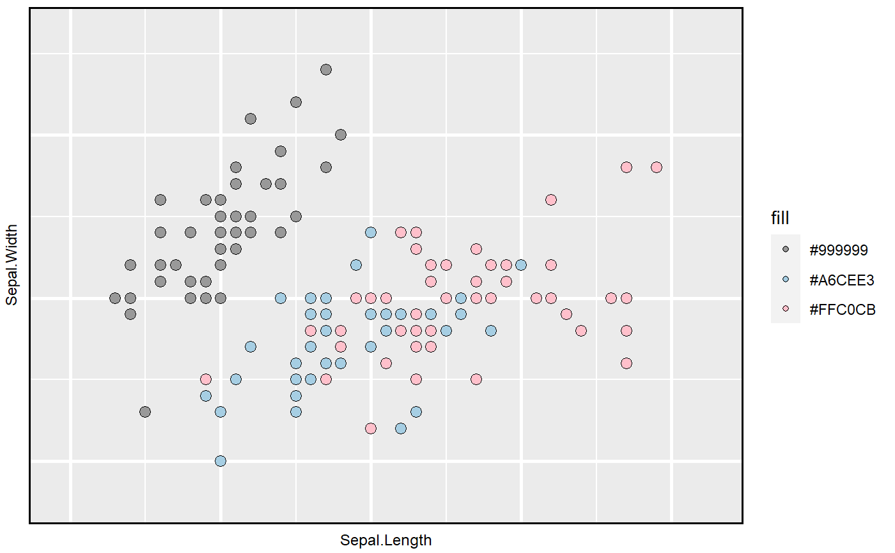
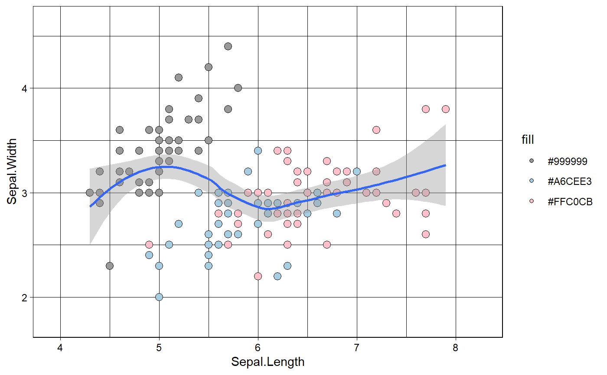

loon to ggplotloon2ggplot.RdCreate a ggplot object from a loon widget
loon2ggplot(target, ...) # S3 method for default loon2ggplot(target, ...) # S3 method for l_plot loon2ggplot(target, ...) # S3 method for l_hist loon2ggplot(target, ...) # S3 method for l_plot3D loon2ggplot(target, ...) # S3 method for l_compound loon2ggplot(target, ...) # S3 method for l_layer_graph loon2ggplot(target, ...) # S3 method for l_layer_histogram loon2ggplot(target, ...) # S3 method for l_layer_scatterplot loon2ggplot(target, ...) # S3 method for l_pairs loon2ggplot(target, ...) # S3 method for l_serialaxes loon2ggplot(target, ...) # S3 method for l_ts loon2ggplot(target, ...)
| target | a |
|---|---|
| ... | arguments used inside |
a ggplot object
l <- l_plot(iris, color = iris$Species) p <- loon2ggplot(l) p # a ggplot objectstr(p)#> List of 10 #> $ data :'data.frame': 150 obs. of 2 variables: #> ..$ x: num [1:150] 5.1 4.9 4.7 4.6 5 5.4 4.6 5 4.4 4.9 ... #> ..$ y: num [1:150] 3.5 3 3.2 3.1 3.6 3.9 3.4 3.4 2.9 3.1 ... #> $ layers :List of 1 #> ..$ :Classes 'LayerInstance', 'Layer', 'ggproto', 'gg' <ggproto object: Class LayerInstance, Layer, gg> #> aes_params: list #> compute_aesthetics: function #> compute_geom_1: function #> compute_geom_2: function #> compute_position: function #> compute_statistic: function #> data: data.frame #> draw_geom: function #> finish_statistics: function #> geom: <ggproto object: Class GeomPoint, Geom, gg> #> aesthetics: function #> default_aes: uneval #> draw_group: function #> draw_key: function #> draw_layer: function #> draw_panel: function #> extra_params: na.rm #> handle_na: function #> non_missing_aes: size shape colour #> optional_aes: #> parameters: function #> required_aes: x y #> setup_data: function #> use_defaults: function #> super: <ggproto object: Class Geom, gg> #> geom_params: list #> inherit.aes: FALSE #> layer_data: function #> map_statistic: function #> mapping: uneval #> position: <ggproto object: Class PositionIdentity, Position, gg> #> compute_layer: function #> compute_panel: function #> required_aes: #> setup_data: function #> setup_params: function #> super: <ggproto object: Class Position, gg> #> print: function #> setup_layer: function #> show.legend: NA #> stat: <ggproto object: Class StatIdentity, Stat, gg> #> aesthetics: function #> compute_group: function #> compute_layer: function #> compute_panel: function #> default_aes: uneval #> extra_params: na.rm #> finish_layer: function #> non_missing_aes: #> parameters: function #> required_aes: #> retransform: TRUE #> setup_data: function #> setup_params: function #> super: <ggproto object: Class Stat, gg> #> stat_params: list #> super: <ggproto object: Class Layer, gg> #> $ scales :Classes 'ScalesList', 'ggproto', 'gg' <ggproto object: Class ScalesList, gg> #> add: function #> clone: function #> find: function #> get_scales: function #> has_scale: function #> input: function #> n: function #> non_position_scales: function #> scales: list #> super: <ggproto object: Class ScalesList, gg> #> $ mapping :List of 2 #> ..$ x: language ~x #> .. ..- attr(*, ".Environment")=<environment: 0x000000002fb4ee70> #> ..$ y: language ~y #> .. ..- attr(*, ".Environment")=<environment: 0x000000002fb4ee70> #> ..- attr(*, "class")= chr "uneval" #> $ theme :List of 13 #> ..$ axis.title :List of 11 #> .. ..$ family : chr "sans" #> .. ..$ face : chr "bold" #> .. ..$ colour : NULL #> .. ..$ size : chr "16" #> .. ..$ hjust : NULL #> .. ..$ vjust : NULL #> .. ..$ angle : NULL #> .. ..$ lineheight : NULL #> .. ..$ margin : NULL #> .. ..$ debug : NULL #> .. ..$ inherit.blank: logi FALSE #> .. ..- attr(*, "class")= chr [1:2] "element_text" "element" #> ..$ axis.title.x :List of 11 #> .. ..$ family : chr "sans" #> .. ..$ face : chr "plain" #> .. ..$ colour : NULL #> .. ..$ size : chr "9" #> .. ..$ hjust : NULL #> .. ..$ vjust : num 1 #> .. ..$ angle : NULL #> .. ..$ lineheight : NULL #> .. ..$ margin : 'margin' num [1:4] 2.75pt 0pt 0pt 0pt #> .. .. ..- attr(*, "valid.unit")= int 8 #> .. .. ..- attr(*, "unit")= chr "pt" #> .. ..$ debug : NULL #> .. ..$ inherit.blank: logi FALSE #> .. ..- attr(*, "class")= chr [1:2] "element_text" "element" #> ..$ axis.title.y :List of 11 #> .. ..$ family : chr "sans" #> .. ..$ face : chr "plain" #> .. ..$ colour : NULL #> .. ..$ size : chr "9" #> .. ..$ hjust : NULL #> .. ..$ vjust : num 1 #> .. ..$ angle : num 90 #> .. ..$ lineheight : NULL #> .. ..$ margin : 'margin' num [1:4] 0pt 2.75pt 0pt 0pt #> .. .. ..- attr(*, "valid.unit")= int 8 #> .. .. ..- attr(*, "unit")= chr "pt" #> .. ..$ debug : NULL #> .. ..$ inherit.blank: logi FALSE #> .. ..- attr(*, "class")= chr [1:2] "element_text" "element" #> ..$ axis.text.x : list() #> .. ..- attr(*, "class")= chr [1:2] "element_blank" "element" #> ..$ axis.text.y : list() #> .. ..- attr(*, "class")= chr [1:2] "element_blank" "element" #> ..$ axis.ticks : list() #> .. ..- attr(*, "class")= chr [1:2] "element_blank" "element" #> ..$ panel.background:List of 5 #> .. ..$ fill : chr "#EBEBEB" #> .. ..$ colour : logi NA #> .. ..$ size : NULL #> .. ..$ linetype : NULL #> .. ..$ inherit.blank: logi FALSE #> .. ..- attr(*, "class")= chr [1:2] "element_rect" "element" #> ..$ panel.border :List of 5 #> .. ..$ fill : logi NA #> .. ..$ colour : chr "#000000" #> .. ..$ size : num 1 #> .. ..$ linetype : NULL #> .. ..$ inherit.blank: logi FALSE #> .. ..- attr(*, "class")= chr [1:2] "element_rect" "element" #> ..$ panel.grid.major:List of 6 #> .. ..$ colour : chr "#FFFFFF" #> .. ..$ size : num 1 #> .. ..$ linetype : chr "solid" #> .. ..$ lineend : NULL #> .. ..$ arrow : logi FALSE #> .. ..$ inherit.blank: logi FALSE #> .. ..- attr(*, "class")= chr [1:2] "element_line" "element" #> ..$ panel.grid.minor:List of 6 #> .. ..$ colour : chr "#FFFFFF" #> .. ..$ size : num 0.5 #> .. ..$ linetype : chr "solid" #> .. ..$ lineend : NULL #> .. ..$ arrow : logi FALSE #> .. ..$ inherit.blank: logi FALSE #> .. ..- attr(*, "class")= chr [1:2] "element_line" "element" #> ..$ plot.background :List of 5 #> .. ..$ fill : chr "#FFFFFF" #> .. ..$ colour : chr "white" #> .. ..$ size : NULL #> .. ..$ linetype : NULL #> .. ..$ inherit.blank: logi FALSE #> .. ..- attr(*, "class")= chr [1:2] "element_rect" "element" #> ..$ plot.title :List of 11 #> .. ..$ family : NULL #> .. ..$ face : NULL #> .. ..$ colour : NULL #> .. ..$ size : 'rel' num 1.2 #> .. ..$ hjust : num 0.5 #> .. ..$ vjust : num 1 #> .. ..$ angle : NULL #> .. ..$ lineheight : NULL #> .. ..$ margin : 'margin' num [1:4] 0pt 0pt 5.5pt 0pt #> .. .. ..- attr(*, "valid.unit")= int 8 #> .. .. ..- attr(*, "unit")= chr "pt" #> .. ..$ debug : NULL #> .. ..$ inherit.blank: logi FALSE #> .. ..- attr(*, "class")= chr [1:2] "element_text" "element" #> ..$ plot.margin : 'unit' num [1:4] 0.3lines 0.3lines 0.2lines 0.2lines #> .. ..- attr(*, "valid.unit")= int 3 #> .. ..- attr(*, "unit")= chr "lines" #> ..- attr(*, "class")= chr [1:2] "theme" "gg" #> ..- attr(*, "complete")= logi FALSE #> ..- attr(*, "validate")= logi FALSE #> $ coordinates:Classes 'CoordCartesian', 'Coord', 'ggproto', 'gg' <ggproto object: Class CoordCartesian, Coord, gg> #> aspect: function #> backtransform_range: function #> clip: on #> default: FALSE #> distance: function #> expand: TRUE #> is_free: function #> is_linear: function #> labels: function #> limits: list #> modify_scales: function #> range: function #> render_axis_h: function #> render_axis_v: function #> render_bg: function #> render_fg: function #> setup_data: function #> setup_layout: function #> setup_panel_params: function #> setup_params: function #> transform: function #> super: <ggproto object: Class CoordCartesian, Coord, gg> #> $ facet :Classes 'FacetNull', 'Facet', 'ggproto', 'gg' <ggproto object: Class FacetNull, Facet, gg> #> compute_layout: function #> draw_back: function #> draw_front: function #> draw_labels: function #> draw_panels: function #> finish_data: function #> init_scales: function #> map_data: function #> params: list #> setup_data: function #> setup_params: function #> shrink: TRUE #> train_scales: function #> vars: function #> super: <ggproto object: Class FacetNull, Facet, gg> #> $ plot_env :<environment: 0x000000002fb4ee70> #> $ labels :List of 6 #> ..$ title : NULL #> ..$ y : chr "Sepal.Width" #> ..$ x : chr "Sepal.Length" #> ..$ colour: chr "color" #> ..$ size : chr "size" #> ..$ shape : chr "pch" #> $ guides :List of 2 #> ..$ shape: logi FALSE #> ..$ size : logi FALSE #> - attr(*, "class")= chr [1:2] "gg" "ggplot"# add themes p + geom_smooth() + theme_linedraw()#>